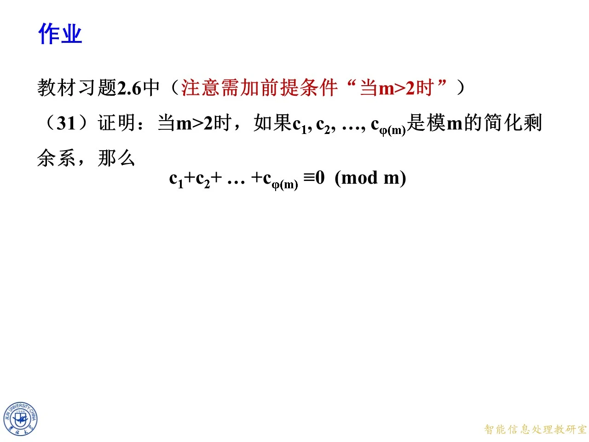
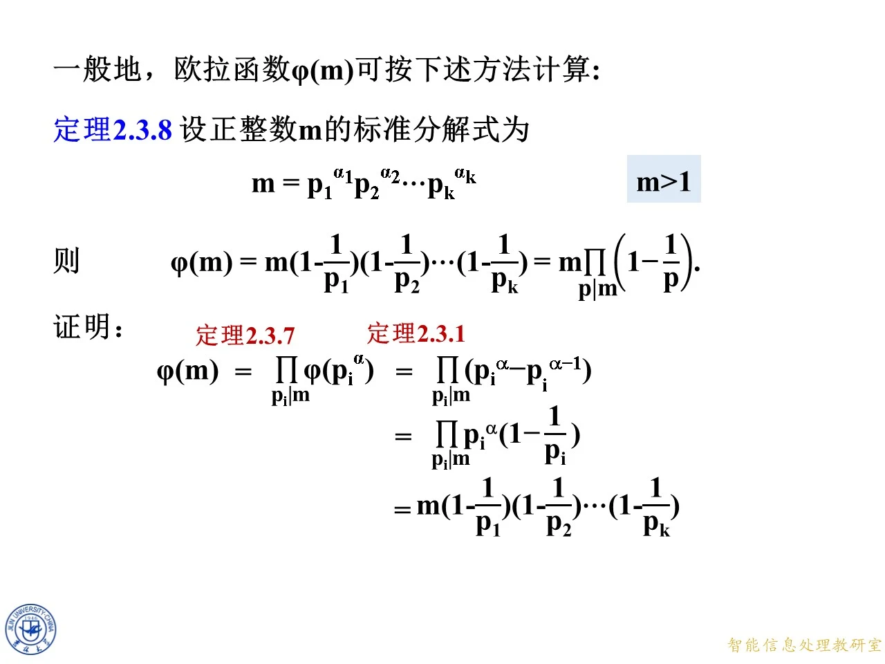
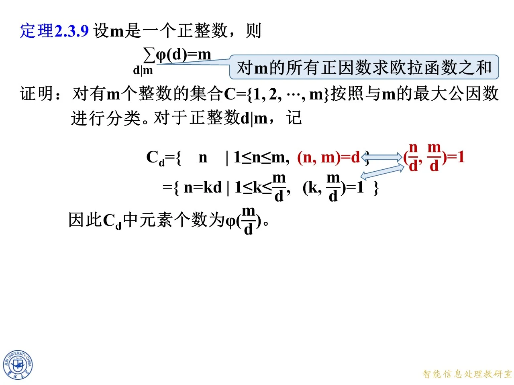

上一节刚给出欧拉函数的定义与简化剩余系的基本性质，这一节要把欧拉函数真正用起来。思路是从一个看起来有点奇怪的问题出发：两个模各自的简化剩余系，怎样拼成它们乘积那个模的简化剩余系。把这个问题答清楚之后，欧拉函数的两条主力性质就自然而然掉出来了，一条是互素时的乘法性，一条是任意正整数的计算公式。本节最后还给出一条把因数与欧拉函数联系起来的求和恒等式，它在第五章构造原根时还会再次出场。

课件原图 · 9月18日授课 · 第 505 页 查看前后已收录原页 → 两个模的简化剩余系：定理 2.3.6
◆ p.291 ｜2.3.3 两个模的简化剩余系
本页给出定理 2.3.6 的完整陈述，条件与结论都要逐字读懂：
定理 2.3.6 若 ( m 1 , m 2 ) = 1 (m_1,m_2)=1 ( m 1 , m 2 ) = 1 m 1 > 0 m_1>0 m 1 > 0 m 2 > 0 m_2>0 m 2 > 0 k 1 k_1 k 1 k 2 k_2 k 2 m 1 m_1 m 1 m 2 m_2 m 2 m 2 k 1 + m 1 k 2 m_2k_1+m_1k_2 m 2 k 1 + m 1 k 2 m 1 m 2 m_1m_2 m 1 m 2
三个条件一个都不能少。( m 1 , m 2 ) = 1 (m_1,m_2)=1 ( m 1 , m 2 ) = 1 m 1 = 2 m_1=2 m 1 = 2 m 2 = 4 m_2=4 m 2 = 4 8 8 8 m 1 > 0 m_1>0 m 1 > 0 m 2 > 0 m_2>0 m 2 > 0
再看这个组合 m 2 k 1 + m 1 k 2 m_2k_1+m_1k_2 m 2 k 1 + m 1 k 2 不能 把简化剩余系直接相乘。注意“交叉”的写法：m 2 m_2 m 2 k 1 k_1 k 1 m 1 m_1 m 1 k 2 k_2 k 2
m 2 k 1 + m 1 k 2 ≡ m 2 k 1 ( m o d m 1 ) m_2k_1+m_1k_2\equiv m_2k_1\pmod{m_1} m 2 k 1 + m 1 k 2 ≡ m 2 k 1 ( mod m 1 ) m 1 k 2 m_1k_2 m 1 k 2 m 1 m_1 m 1 m 1 m_1 m 1 m 2 k 1 + m 1 k 2 ≡ m 1 k 2 ( m o d m 2 ) m_2k_1+m_1k_2\equiv m_1k_2\pmod{m_2} m 2 k 1 + m 1 k 2 ≡ m 1 k 2 ( mod m 2 ) m 2 k 1 m_2k_1 m 2 k 1 m 2 m_2 m 2
也就是说，这个数的模 m 1 m_1 m 1 只由 k 1 k_1 k 1 m 2 m_2 m 2 只由 k 2 k_2 k 2 m 2 m_2 m 2 k 1 k_1 k 1 m 1 k 1 + m 2 k 2 m_1k_1+m_2k_2 m 1 k 1 + m 2 k 2 m 1 m_1 m 1 m 2 k 2 m_2k_2 m 2 k 2 k 1 k_1 k 1
还要确认构造出的数确实落在“简化”里，即 ( m 2 k 1 + m 1 k 2 , m 1 m 2 ) = 1 (m_2k_1+m_1k_2,\,m_1m_2)=1 ( m 2 k 1 + m 1 k 2 , m 1 m 2 ) = 1 p ∣ m 1 p\mid m_1 p ∣ m 1 p p p m 2 k 1 + m 1 k 2 m_2k_1+m_1k_2 m 2 k 1 + m 1 k 2 p ∣ m 1 p\mid m_1 p ∣ m 1 p ∣ m 1 k 2 p\mid m_1k_2 p ∣ m 1 k 2 p ∣ m 2 k 1 p\mid m_2k_1 p ∣ m 2 k 1 ( m 1 , m 2 ) = 1 (m_1,m_2)=1 ( m 1 , m 2 ) = 1 p ∤ m 2 p\nmid m_2 p ∤ m 2 p ∣ k 1 p\mid k_1 p ∣ k 1 ( k 1 , m 1 ) = 1 (k_1,m_1)=1 ( k 1 , m 1 ) = 1 m 2 m_2 m 2 m 1 m 2 m_1m_2 m 1 m 2 m 1 m 2 m_1m_2 m 1 m 2
◆ p.292-293 ｜例13 m 1 = 4 m_1=4 m 1 = 4 m 2 = 5 m_2=5 m 2 = 5 m 1 = 4 m_1=4 m 1 = 4 m 2 = 5 m_2=5 m 2 = 5 x 1 x_1 x 1 x 2 x_2 x 2 m 1 m_1 m 1 m 2 m_2 m 2 m 2 x 1 + m 1 x 2 m_2x_1+m_1x_2 m 2 x 1 + m 1 x 2 m 1 m 2 m_1m_2 m 1 m 2 2 × 4 2\times4 2 × 4
先写下两个简化剩余系。模 4 4 4 4 4 4 1 1 1 3 3 3 x 1 ∈ { 1 , 3 } x_1\in\{1,3\} x 1 ∈ { 1 , 3 } φ ( 4 ) = 2 \varphi(4)=2 φ ( 4 ) = 2 5 5 5 1 , 2 , 3 , 4 1,2,3,4 1 , 2 , 3 , 4 5 5 5 x 2 ∈ { 1 , 2 , 3 , 4 } x_2\in\{1,2,3,4\} x 2 ∈ { 1 , 2 , 3 , 4 } φ ( 5 ) = 4 \varphi(5)=4 φ ( 5 ) = 4 2 × 4 = 8 2\times4=8 2 × 4 = 8 2 2 2 4 4 4
代入公式 m 2 x 1 + m 1 x 2 = 5 x 1 + 4 x 2 m_2x_1+m_1x_2=5x_1+4x_2 m 2 x 1 + m 1 x 2 = 5 x 1 + 4 x 2
原始和
x 2 = 1 x_2=1 x 2 = 1 x 2 = 2 x_2=2 x 2 = 2 x 2 = 3 x_2=3 x 2 = 3 x 2 = 4 x_2=4 x 2 = 4
x 1 = 1 x_1=1 x 1 = 1 9 9 9 13 13 13 17 17 17 21 21 21
x 1 = 3 x_1=3 x 1 = 3 19 19 19 23 23 23 27 27 27 31 31 31
再对模 m 1 m 2 = 20 m_1m_2=20 m 1 m 2 = 20 9 , 13 , 17 , 21 → 9 , 13 , 17 , 1 9,13,17,21\to9,13,17,1 9 , 13 , 17 , 21 → 9 , 13 , 17 , 1 21 = 20 + 1 21=20+1 21 = 20 + 1 19 , 23 , 27 , 31 → 19 , 3 , 7 , 11 19,23,27,31\to19,3,7,11 19 , 23 , 27 , 31 → 19 , 3 , 7 , 11 23 = 20 + 3 23=20+3 23 = 20 + 3 27 = 20 + 7 27=20+7 27 = 20 + 7 31 = 20 + 11 31=20+11 31 = 20 + 11 9 , 13 , 17 , 1 9,13,17,1 9 , 13 , 17 , 1 19 , 3 , 7 , 11 19,3,7,11 19 , 3 , 7 , 11 1 1 1 21 21 21 21 21 21
对照模 20 20 20 1 , 3 , 7 , 9 , 11 , 13 , 17 , 19 1,3,7,9,11,13,17,19 1 , 3 , 7 , 9 , 11 , 13 , 17 , 19 8 8 8 8 8 8
一个容易被表格骗过去的点是：“遍历”是模意义下 的遍历，不是数值上的。表格里 9 , 13 , 17 , 19 9,13,17,19 9 , 13 , 17 , 19 20 20 20 8 8 8
拓展 （课件外补充）：这个例子还能顺手验证 φ ( m 1 m 2 ) = φ ( m 1 ) φ ( m 2 ) \varphi(m_1m_2)=\varphi(m_1)\varphi(m_2) φ ( m 1 m 2 ) = φ ( m 1 ) φ ( m 2 ) φ ( 20 ) = 8 = 2 ⋅ 4 = φ ( 4 ) φ ( 5 ) \varphi(20)=8=2\cdot4=\varphi(4)\varphi(5) φ ( 20 ) = 8 = 2 ⋅ 4 = φ ( 4 ) φ ( 5 ) 4 4 4 5 5 5 m 1 = 2 m_1=2 m 1 = 2 m 2 = 4 m_2=4 m 2 = 4 5 5 5 φ ( 8 ) = 4 \varphi(8)=4 φ ( 8 ) = 4
◆ p.294-295 ｜例14 m 1 = 8 m_1=8 m 1 = 8 m 2 = 9 m_2=9 m 2 = 9 m 1 = 8 m_1=8 m 1 = 8 m 2 = 9 m_2=9 m 2 = 9 x 1 x_1 x 1 x 2 x_2 x 2 m 1 m_1 m 1 m 2 m_2 m 2 m 2 x 1 + m 1 x 2 m_2x_1+m_1x_2 m 2 x 1 + m 1 x 2 m 1 m 2 m_1m_2 m 1 m 2
范围的确定比上题麻烦一点，因为 8 8 8 9 9 9 5 5 5 1 1 1 4 4 4 8 8 8 x 1 ∈ { 1 , 3 , 5 , 7 } x_1\in\{1,3,5,7\} x 1 ∈ { 1 , 3 , 5 , 7 } φ ( 8 ) = 4 \varphi(8)=4 φ ( 8 ) = 4 9 9 9 3 3 3 x 2 ∈ { 1 , 2 , 4 , 5 , 7 , 8 } x_2\in\{1,2,4,5,7,8\} x 2 ∈ { 1 , 2 , 4 , 5 , 7 , 8 } φ ( 9 ) = 6 \varphi(9)=6 φ ( 9 ) = 6 72 72 72 4 4 4 6 6 6 4 × 6 = 24 4\times6=24 4 × 6 = 24 φ ( 8 ) φ ( 9 ) = 24 \varphi(8)\varphi(9)=24 φ ( 8 ) φ ( 9 ) = 24
逐格算 m 2 x 1 + m 1 x 2 = 9 x 1 + 8 x 2 m_2x_1+m_1x_2=9x_1+8x_2 m 2 x 1 + m 1 x 2 = 9 x 1 + 8 x 2 72 72 72
余数（模 72 72 72
x 2 = 1 x_2=1 x 2 = 1 x 2 = 2 x_2=2 x 2 = 2 x 2 = 4 x_2=4 x 2 = 4 x 2 = 5 x_2=5 x 2 = 5 x 2 = 7 x_2=7 x 2 = 7 x 2 = 8 x_2=8 x 2 = 8
x 1 = 1 x_1=1 x 1 = 1 17 17 17 25 25 25 41 41 41 49 49 49 65 65 65 73 → 1 73\to1 73 → 1
x 1 = 3 x_1=3 x 1 = 3 35 35 35 43 43 43 59 59 59 67 67 67 83 → 11 83\to11 83 → 11 91 → 19 91\to19 91 → 19
x 1 = 5 x_1=5 x 1 = 5 53 53 53 61 61 61 77 → 5 77\to5 77 → 5 85 → 13 85\to13 85 → 13 101 → 29 101\to29 101 → 29 109 → 37 109\to37 109 → 37
x 1 = 7 x_1=7 x 1 = 7 71 71 71 79 → 7 79\to7 79 → 7 95 → 23 95\to23 95 → 23 103 → 31 103\to31 103 → 31 119 → 47 119\to47 119 → 47 127 → 55 127\to55 127 → 55
有几格必须减 72 72 72 1 1 1 71 71 71 x 1 = 1 x_1=1 x 1 = 1 x 2 = 8 x_2=8 x 2 = 8 9 + 64 = 73 9+64=73 9 + 64 = 73 73 − 72 = 1 73-72=1 73 − 72 = 1 1 1 1 x 1 = 7 x_1=7 x 1 = 7 x 2 = 8 x_2=8 x 2 = 8 63 + 64 = 127 63+64=127 63 + 64 = 127 127 − 72 = 55 127-72=55 127 − 72 = 55 72 72 72
把这 24 24 24 1 , 5 , 7 , 11 , 13 , 17 , 19 , 23 , 25 , 29 , 31 , 35 , 37 , 41 , 43 , 47 , 49 , 53 , 55 , 59 , 61 , 65 , 67 , 71 1,5,7,11,13,17,19,23,25,29,31,35,37,41,43,47,49,53,55,59,61,65,67,71 1 , 5 , 7 , 11 , 13 , 17 , 19 , 23 , 25 , 29 , 31 , 35 , 37 , 41 , 43 , 47 , 49 , 53 , 55 , 59 , 61 , 65 , 67 , 71 1 1 1 71 71 71 72 72 72 72 72 72 8 8 8
拓展 （课件外补充）：例14 顺带说明一个常被忽略的现象：两个与模互素的数按定理 2.3.6 的方式相加，结果仍与模互素 。9 x 1 9x_1 9 x 1 8 x 2 8x_2 8 x 2 72 72 72 9 9 9 8 8 8 3 2 3^2 3 2 2 3 2^3 2 3 x 1 x_1 x 1 x 2 x_2 x 2 3 3 3 72 72 72 72 72 72 72 72 72
◆ p.296-301 ｜定理 2.3.6 的个数核对
p.296 起是把同一张定理页重新推一遍，并在下方加一块浅蓝色的“个数核对”图：左边写 m 2 k 1 + m 1 k 2 m_2k_1+m_1k_2 m 2 k 1 + m 1 k 2 φ ( m 1 ) φ ( m 2 ) \varphi(m_1)\varphi(m_2) φ ( m 1 ) φ ( m 2 ) m 1 m 2 m_1m_2 m 1 m 2 φ ( m 1 m 2 ) \varphi(m_1m_2) φ ( m 1 m 2 ) k 1 k_1 k 1 k 2 k_2 k 2 k 1 k_1 k 1 m 1 m_1 m 1 φ ( m 1 ) \varphi(m_1) φ ( m 1 ) k 2 k_2 k 2 m 2 m_2 m 2 φ ( m 2 ) \varphi(m_2) φ ( m 2 )
从 p.297 往后，动画一帧一帧地把“φ ( m 1 ) φ ( m 2 ) \varphi(m_1)\varphi(m_2) φ ( m 1 ) φ ( m 2 ) φ ( m 1 m 2 ) \varphi(m_1m_2) φ ( m 1 m 2 )
这里有个逻辑细节必须点明：“个数相等”是结论，不能拿来当证明的前提 。左边有 φ ( m 1 ) φ ( m 2 ) \varphi(m_1)\varphi(m_2) φ ( m 1 ) φ ( m 2 ) ( k 1 , k 2 ) (k_1,k_2) ( k 1 , k 2 ) φ ( m 1 m 2 ) \varphi(m_1m_2) φ ( m 1 m 2 )
不重复（单射）这样看：若 m 2 k 1 + m 1 k 2 ≡ m 2 k 1 ′ + m 1 k 2 ′ ( m o d m 1 m 2 ) m_2k_1+m_1k_2\equiv m_2k_1'+m_1k_2'\pmod{m_1m_2} m 2 k 1 + m 1 k 2 ≡ m 2 k 1 ′ + m 1 k 2 ′ ( mod m 1 m 2 ) m 1 m_1 m 1 m 2 k 1 ≡ m 2 k 1 ′ ( m o d m 1 ) m_2k_1\equiv m_2k_1'\pmod{m_1} m 2 k 1 ≡ m 2 k 1 ′ ( mod m 1 ) ( m 2 , m 1 ) = 1 (m_2,m_1)=1 ( m 2 , m 1 ) = 1 m 2 m_2 m 2 k 1 ≡ k 1 ′ ( m o d m 1 ) k_1\equiv k_1'\pmod{m_1} k 1 ≡ k 1 ′ ( mod m 1 ) k 1 , k 1 ′ k_1,k_1' k 1 , k 1 ′ m 1 m_1 m 1 k 1 = k 1 ′ k_1=k_1' k 1 = k 1 ′ k 2 = k 2 ′ k_2=k_2' k 2 = k 2 ′ φ ( m 1 ) φ ( m 2 ) \varphi(m_1)\varphi(m_2) φ ( m 1 ) φ ( m 2 ) ( k 1 , k 2 ) (k_1,k_2) ( k 1 , k 2 ) φ ( m 1 ) φ ( m 2 ) \varphi(m_1)\varphi(m_2) φ ( m 1 ) φ ( m 2 ) φ ( m 1 m 2 ) ≥ φ ( m 1 ) φ ( m 2 ) \varphi(m_1m_2)\ge\varphi(m_1)\varphi(m_2) φ ( m 1 m 2 ) ≥ φ ( m 1 ) φ ( m 2 )
不遗漏（满射）则要正面构造。任给模 m 1 m 2 m_1m_2 m 1 m 2 r r r ( r , m 1 m 2 ) = 1 (r,m_1m_2)=1 ( r , m 1 m 2 ) = 1 ( m 2 , m 1 ) = 1 (m_2,m_1)=1 ( m 2 , m 1 ) = 1 m 2 m_2 m 2 m 1 m_1 m 1 k 1 ≡ m 2 − 1 r ( m o d m 1 ) k_1\equiv m_2^{-1}r\pmod{m_1} k 1 ≡ m 2 − 1 r ( mod m 1 ) ( k 1 , m 1 ) = 1 (k_1,m_1)=1 ( k 1 , m 1 ) = 1 k 1 k_1 k 1 m 1 m_1 m 1 m 2 k 1 ≡ r m_2k_1\equiv r m 2 k 1 ≡ r ( r , m 1 ) = 1 (r,m_1)=1 ( r , m 1 ) = 1 k 2 ≡ m 1 − 1 r ( m o d m 2 ) k_2\equiv m_1^{-1}r\pmod{m_2} k 2 ≡ m 1 − 1 r ( mod m 2 ) ( k 2 , m 2 ) = 1 (k_2,m_2)=1 ( k 2 , m 2 ) = 1 m 2 k 1 + m 1 k 2 ≡ r ( m o d m 1 ) m_2k_1+m_1k_2\equiv r\pmod{m_1} m 2 k 1 + m 1 k 2 ≡ r ( mod m 1 ) ≡ r ( m o d m 2 ) \equiv r\pmod{m_2} ≡ r ( mod m 2 ) m 2 k 1 + m 1 k 2 ≡ r ( m o d m 1 m 2 ) m_2k_1+m_1k_2\equiv r\pmod{m_1m_2} m 2 k 1 + m 1 k 2 ≡ r ( mod m 1 m 2 ) φ ( m 1 m 2 ) ≤ φ ( m 1 ) φ ( m 2 ) \varphi(m_1m_2)\le\varphi(m_1)\varphi(m_2) φ ( m 1 m 2 ) ≤ φ ( m 1 ) φ ( m 2 )
拓展 （课件外补充）：课件把“个数相等”画成了等号，读的时候容易误以为是在用“个数相等”证“遍历”。正确的顺序反过来：先证注入与满射，然后等号作为推论 落下来，这个等号的真名就是定理 2.3.7（乘法性），下一页就正式把它写成定理。这也是为什么课件的顺序是先讲 2.3.6、再讲 2.3.7——2.3.6 是“集合层面的一一对应”，2.3.7 是“把两边的元素个数数一遍”。
欧拉函数的乘法性：定理 2.3.7
◆ p.302 ｜2.3.4 欧拉函数的性质
本页是本节的正题，定理装在一个浅蓝色方框里：
定理 2.3.7（欧拉函数的性质）若 ( m , n ) = 1 (m,n)=1 ( m , n ) = 1 φ ( m n ) = φ ( m ) φ ( n ) \varphi(mn)=\varphi(m)\varphi(n) φ ( mn ) = φ ( m ) φ ( n )
证明只有三行文字，但每一步都得说清对应关系。根据定理 2.3.6（把那里的 m 1 , m 2 m_1,m_2 m 1 , m 2 m , n m,n m , n k 1 k_1 k 1 m m m k 2 k_2 k 2 n n n n k 1 + m k 2 nk_1+mk_2 n k 1 + m k 2 m n mn mn
于是同一批数有两种数法。按“来源”数：k 1 k_1 k 1 φ ( m ) \varphi(m) φ ( m ) k 2 k_2 k 2 φ ( n ) \varphi(n) φ ( n ) φ ( m ) φ ( n ) \varphi(m)\varphi(n) φ ( m ) φ ( n ) φ ( m ) φ ( n ) \varphi(m)\varphi(n) φ ( m ) φ ( n ) m n mn mn m n mn mn φ ( m n ) \varphi(mn) φ ( mn ) φ ( m n ) = φ ( m ) φ ( n ) \varphi(mn)=\varphi(m)\varphi(n) φ ( mn ) = φ ( m ) φ ( n )
这就是乘法性的全部内容。要注意它叫“乘法性”而不叫“乘性函数的一般性质”：条件 ( m , n ) = 1 (m,n)=1 ( m , n ) = 1 。比如 φ ( 4 ) = 2 \varphi(4)=2 φ ( 4 ) = 2 φ ( 4 ⋅ 4 ) = φ ( 16 ) = 8 ≠ 2 ⋅ 2 = 4 \varphi(4\cdot4)=\varphi(16)=8\ne2\cdot2=4 φ ( 4 ⋅ 4 ) = φ ( 16 ) = 8 = 2 ⋅ 2 = 4
拓展 （课件外补充）：满足“互素时乘积的函数值等于函数值之积”的函数在数论里叫积性函数 ，欧拉函数是最典型的例子。这条性质真正的威力在于它可以反复用：只要 n n n φ ( p α ) = p α − p α − 1 \varphi(p^{\alpha})=p^{\alpha}-p^{\alpha-1} φ ( p α ) = p α − p α − 1
◆ p.303-312 ｜例15、例16 与思考题
p.303 起是同一个定理页的逐步展开帧，到 p.312 定格为三个小任务，正好把定理 2.3.7 练一遍。
例15 φ ( 77 ) = φ ( 7 ) φ ( 11 ) = 6 ⋅ 10 = 60 \varphi(77)=\varphi(7)\varphi(11)=6\cdot10=60 φ ( 77 ) = φ ( 7 ) φ ( 11 ) = 6 ⋅ 10 = 60 77 = 7 ⋅ 11 77=7\cdot11 77 = 7 ⋅ 11 7 7 7 11 11 11 ( 7 , 11 ) = 1 (7,11)=1 ( 7 , 11 ) = 1 φ ( p ) = p − 1 \varphi(p)=p-1 φ ( p ) = p − 1 φ ( 7 ) = 6 \varphi(7)=6 φ ( 7 ) = 6 φ ( 11 ) = 10 \varphi(11)=10 φ ( 11 ) = 10 60 60 60 1 1 1 77 77 77 7 7 7 11 11 11 11 + 7 − 1 = 17 11+7-1=17 11 + 7 − 1 = 17 77 77 77 77 − 17 = 60 77-17=60 77 − 17 = 60
例16 φ ( 30 ) = φ ( 2 ⋅ 3 ⋅ 5 ) = φ ( 2 ) φ ( 3 ) φ ( 5 ) = 1 ⋅ 2 ⋅ 4 = 8 \varphi(30)=\varphi(2\cdot3\cdot5)=\varphi(2)\varphi(3)\varphi(5)=1\cdot2\cdot4=8 φ ( 30 ) = φ ( 2 ⋅ 3 ⋅ 5 ) = φ ( 2 ) φ ( 3 ) φ ( 5 ) = 1 ⋅ 2 ⋅ 4 = 8 ( 2 , 3 ) = 1 (2,3)=1 ( 2 , 3 ) = 1 φ ( 6 ) = φ ( 2 ) φ ( 3 ) \varphi(6)=\varphi(2)\varphi(3) φ ( 6 ) = φ ( 2 ) φ ( 3 ) ( 6 , 5 ) = 1 (6,5)=1 ( 6 , 5 ) = 1 φ ( 30 ) = φ ( 6 ) φ ( 5 ) \varphi(30)=\varphi(6)\varphi(5) φ ( 30 ) = φ ( 6 ) φ ( 5 ) 2 , 3 , 5 2,3,5 2 , 3 , 5 两两互素 ，这一点对三个不同的素数自动成立；若拆出的因子之间还有公因子（例如把 30 30 30 6 6 6 5 5 5 2 2 2 15 15 15 15 15 15 2 2 2 6 6 6 5 ⋅ … 5\cdot\ldots 5 ⋅ … φ \varphi φ φ ( 2 ) = 1 \varphi(2)=1 φ ( 2 ) = 1 φ ( 3 ) = 2 \varphi(3)=2 φ ( 3 ) = 2 φ ( 5 ) = 4 \varphi(5)=4 φ ( 5 ) = 4 8 8 8 1 1 1 30 30 30 30 30 30 1 , 7 , 11 , 13 , 17 , 19 , 23 , 29 1,7,11,13,17,19,23,29 1 , 7 , 11 , 13 , 17 , 19 , 23 , 29 8 8 8
思考 计算 φ ( 72 ) \varphi(72) φ ( 72 ) 72 = 8 ⋅ 9 72=8\cdot9 72 = 8 ⋅ 9 ( 8 , 9 ) = 1 (8,9)=1 ( 8 , 9 ) = 1 2 2 2 3 3 3
φ ( 72 ) = φ ( 8 ) φ ( 9 ) = 4 ⋅ 6 = 24. \varphi(72)=\varphi(8)\varphi(9)=4\cdot6=24. φ ( 72 ) = φ ( 8 ) φ ( 9 ) = 4 ⋅ 6 = 24.
φ ( 8 ) = 4 \varphi(8)=4 φ ( 8 ) = 4 8 8 8 { 1 , 3 , 5 , 7 } \{1,3,5,7\} { 1 , 3 , 5 , 7 } φ ( 9 ) = 6 \varphi(9)=6 φ ( 9 ) = 6 9 9 9 3 , 6 3,6 3 , 6 6 6 6 72 = 2 3 ⋅ 3 2 72=2^3\cdot3^2 72 = 2 3 ⋅ 3 2
φ ( 72 ) = 72 ( 1 − 1 2 ) ( 1 − 1 3 ) = 72 ⋅ 1 2 ⋅ 2 3 = 24 , \varphi(72)=72\left(1-\frac12\right)\left(1-\frac13\right)=72\cdot\frac12\cdot\frac23=24, φ ( 72 ) = 72 ( 1 − 2 1 ) ( 1 − 3 1 ) = 72 ⋅ 2 1 ⋅ 3 2 = 24 ,
两条路给出同一个数。第三种验算最笨但最稳：把 1 1 1 71 71 71 72 72 72 24 24 24 24 24 24
拓展 （课件外补充）：这里有个经典误区：φ ( 72 ) \varphi(72) φ ( 72 ) φ ( 8 ⋅ 9 ) = φ ( 8 ) φ ( 9 ) \varphi(8\cdot9)=\varphi(8)\varphi(9) φ ( 8 ⋅ 9 ) = φ ( 8 ) φ ( 9 ) 8 8 8 9 9 9 φ ( 72 ) = φ ( 2 ⋅ 36 ) = φ ( 2 ) φ ( 36 ) \varphi(72)=\varphi(2\cdot36)=\varphi(2)\varphi(36) φ ( 72 ) = φ ( 2 ⋅ 36 ) = φ ( 2 ) φ ( 36 ) ( 2 , 36 ) = 2 ≠ 1 (2,36)=2\ne1 ( 2 , 36 ) = 2 = 1 φ ( 2 ) φ ( 36 ) = 1 ⋅ 12 = 12 ≠ 24 \varphi(2)\varphi(36)=1\cdot12=12\ne24 φ ( 2 ) φ ( 36 ) = 1 ⋅ 12 = 12 = 24 同一个数有多种拆法，只有互素的那种拆法合法 ，这就是为什么先做素因数分解、再按素数的幂分组是标准流程。

课件原图 · 9月18日授课 · 第 319 页 查看前后已收录原页 → 欧拉函数的计算公式：定理 2.3.8
◆ p.313-319 ｜一般情形下的 φ ( m ) \varphi(m) φ ( m ) φ ( m ) \varphi(m) φ ( m )
定理 2.3.8 设正整数 m m m m = p 1 α 1 p 2 α 2 ⋯ p k α k m=p_1^{\alpha_1}p_2^{\alpha_2}\cdots p_k^{\alpha_k} m = p 1 α 1 p 2 α 2 ⋯ p k α k m > 1 m>1 m > 1 φ ( m ) = m ( 1 − 1 p 1 ) ( 1 − 1 p 2 ) ⋯ ( 1 − 1 p k ) = m ∏ p ∣ m ( 1 − 1 p ) . \varphi(m)=m\left(1-\frac{1}{p_1}\right)\left(1-\frac{1}{p_2}\right)\cdots\left(1-\frac{1}{p_k}\right)=m\prod_{p\mid m}\left(1-\frac{1}{p}\right). φ ( m ) = m ( 1 − p 1 1 ) ( 1 − p 2 1 ) ⋯ ( 1 − p k 1 ) = m p ∣ m ∏ ( 1 − p 1 ) .
先解释记号，别在两处摔跤。第一，p 1 , … , p k p_1,\ldots,p_k p 1 , … , p k m m m 全部不同素因子 ，每个只出现一次，不论它的指数是多少；∏ p ∣ m \prod_{p\mid m} ∏ p ∣ m p p p m > 1 m>1 m > 1 m = 1 m=1 m = 1 φ ( 1 ) = 1 \varphi(1)=1 φ ( 1 ) = 1
证明的思路是“先拆到底、再改写法”，课件用红字标出了两处援引：
φ ( m ) = ∏ p i ∣ m φ ( p i α i ) = ∏ p i ∣ m ( p i α i − p i α i − 1 ) . \varphi(m)=\prod_{p_i\mid m}\varphi(p_i^{\alpha_i})=\prod_{p_i\mid m}\left(p_i^{\alpha_i}-p_i^{\alpha_i-1}\right). φ ( m ) = p i ∣ m ∏ φ ( p i α i ) = p i ∣ m ∏ ( p i α i − p i α i − 1 ) .
左端这一步用的是定理 2.3.7 （乘法性）。合法性的关键是：p 1 α 1 , p 2 α 2 , … , p k α k p_1^{\alpha_1},p_2^{\alpha_2},\ldots,p_k^{\alpha_k} p 1 α 1 , p 2 α 2 , … , p k α k k k k 两两互素 ——它们分别是不同素数的幂，任何两个都没有公共素因子。所以可以反复用乘法性把它们拆开：先 φ ( p 1 α 1 p 2 α 2 ) = φ ( p 1 α 1 ) φ ( p 2 α 2 ) \varphi(p_1^{\alpha_1}p_2^{\alpha_2})=\varphi(p_1^{\alpha_1})\varphi(p_2^{\alpha_2}) φ ( p 1 α 1 p 2 α 2 ) = φ ( p 1 α 1 ) φ ( p 2 α 2 )
右端那一步用的是定理 2.3.1 ，即素幂的欧拉函数
φ ( p α ) = p α − p α − 1 . \varphi(p^\alpha)=p^\alpha-p^{\alpha-1}. φ ( p α ) = p α − p α − 1 .
这条为什么要单独说清？因为“1 1 1 p α p^\alpha p α p α p^\alpha p α p α p^\alpha p α p p p p α p^\alpha p α p p p 1 1 1 p α p^\alpha p α p α p^\alpha p α p p p p , 2 p , 3 p , … , p α − 1 ⋅ p p,2p,3p,\ldots,p^{\alpha-1}\cdot p p , 2 p , 3 p , … , p α − 1 ⋅ p p α − 1 p^{\alpha-1} p α − 1 p α − p α − 1 p^\alpha-p^{\alpha-1} p α − p α − 1 α = 1 \alpha=1 α = 1 p − 1 p-1 p − 1 0 0 0
接着把 p i α i p_i^{\alpha_i} p i α i
∏ p i ∣ m ( p i α i − p i α i − 1 ) = ∏ p i ∣ m p i α i ( 1 − 1 p i ) . \prod_{p_i\mid m}\left(p_i^{\alpha_i}-p_i^{\alpha_i-1}\right)=\prod_{p_i\mid m}p_i^{\alpha_i}\left(1-\frac{1}{p_i}\right). p i ∣ m ∏ ( p i α i − p i α i − 1 ) = p i ∣ m ∏ p i α i ( 1 − p i 1 ) .
最后一步是把所有 p i α i p_i^{\alpha_i} p i α i ∏ p i ∣ m p i α i = p 1 α 1 p 2 α 2 ⋯ p k α k = m \prod_{p_i\mid m}p_i^{\alpha_i}=p_1^{\alpha_1}p_2^{\alpha_2}\cdots p_k^{\alpha_k}=m ∏ p i ∣ m p i α i = p 1 α 1 p 2 α 2 ⋯ p k α k = m m ∏ ( 1 − 1 / p ) m\prod(1-1/p) m ∏ ( 1 − 1/ p )
这个形式的实用性在于：只分解、不逐个枚举 。要算 φ ( m ) \varphi(m) φ ( m ) m m m p p p ( 1 − 1 / p ) (1-1/p) ( 1 − 1/ p ) m = 1000 = 2 3 ⋅ 5 3 m=1000=2^3\cdot5^3 m = 1000 = 2 3 ⋅ 5 3 2 2 2 5 5 5
φ ( 1000 ) = 1000 ( 1 − 1 2 ) ( 1 − 1 5 ) = 1000 ⋅ 1 2 ⋅ 4 5 = 400 , \varphi(1000)=1000\left(1-\frac12\right)\left(1-\frac15\right)=1000\cdot\frac12\cdot\frac45=400, φ ( 1000 ) = 1000 ( 1 − 2 1 ) ( 1 − 5 1 ) = 1000 ⋅ 2 1 ⋅ 5 4 = 400 ,
而不是乘四次。这一点与“φ ( p α ) = p α − p α − 1 \varphi(p^\alpha)=p^\alpha-p^{\alpha-1} φ ( p α ) = p α − p α − 1 p α p^\alpha p α m m m
拓展 （课件外补充）：两个常见的手算坑。一是把 ∏ p ∣ m \prod_{p\mid m} ∏ p ∣ m p p p m m m 全部正因数 ”，结果把 4 4 4 8 8 8 m m m 不同素因子 ”。二是忘了 1 − 1 p 1-\frac1p 1 − p 1 φ ( 12 ) = 12 ⋅ 1 2 ⋅ 2 3 = 4 \varphi(12)=12\cdot\frac12\cdot\frac23=4 φ ( 12 ) = 12 ⋅ 2 1 ⋅ 3 2 = 4 12 2 ⋅ 2 3 \frac{12}{2}\cdot\frac{2}{3} 2 12 ⋅ 3 2 φ ( 30 ) = 30 ⋅ 1 2 ⋅ 2 3 ⋅ 4 5 \varphi(30)=30\cdot\frac12\cdot\frac23\cdot\frac45 φ ( 30 ) = 30 ⋅ 2 1 ⋅ 3 2 ⋅ 5 4 p − 1 p-1 p − 1 p p p 30 → 15 → 10 → 8 30\to15\to10\to8 30 → 15 → 10 → 8
推论：两个不同素数之积的欧拉函数
◆ p.320-322 ｜推论的逐帧推出
这三页是同一个推论的动画分解，内容层层递进：p.320 只写“推论 若 p p p q q q φ ( p q ) = \varphi(pq)= φ ( pq ) = φ ( p q ) = φ ( p ) φ ( q ) = \varphi(pq)=\varphi(p)\varphi(q)= φ ( pq ) = φ ( p ) φ ( q ) = φ ( p q ) = φ ( p ) φ ( q ) = ( p − 1 ) ( q − 1 ) = \varphi(pq)=\varphi(p)\varphi(q)=(p-1)(q-1)= φ ( pq ) = φ ( p ) φ ( q ) = ( p − 1 ) ( q − 1 ) =
推论的完整形式是
φ ( p q ) = p q − p − q + 1. \varphi(pq)=pq-p-q+1. φ ( pq ) = pq − p − q + 1.
证明只要一行：因 p ≠ q p\ne q p = q ( p , q ) = 1 (p,q)=1 ( p , q ) = 1 φ ( p q ) = φ ( p ) φ ( q ) \varphi(pq)=\varphi(p)\varphi(q) φ ( pq ) = φ ( p ) φ ( q ) φ \varphi φ φ ( p ) = p − 1 \varphi(p)=p-1 φ ( p ) = p − 1 φ ( q ) = q − 1 \varphi(q)=q-1 φ ( q ) = q − 1
φ ( p q ) = ( p − 1 ) ( q − 1 ) = p q − p − q + 1. \varphi(pq)=(p-1)(q-1)=pq-p-q+1. φ ( pq ) = ( p − 1 ) ( q − 1 ) = pq − p − q + 1.
把它与定理 2.3.8 对照一下：m = p q m=pq m = pq m ( 1 − 1 p ) ( 1 − 1 q ) = p q ⋅ p − 1 p ⋅ q − 1 q = ( p − 1 ) ( q − 1 ) m(1-\frac1p)(1-\frac1q)=pq\cdot\frac{p-1}{p}\cdot\frac{q-1}{q}=(p-1)(q-1) m ( 1 − p 1 ) ( 1 − q 1 ) = pq ⋅ p p − 1 ⋅ q q − 1 = ( p − 1 ) ( q − 1 ) φ ( p q ) \varphi(pq) φ ( pq )
这个式子还有一种更有用的读法，下一页例17 就用它：
p + q = p q + 1 − φ ( p q ) = m + 1 − φ ( m ) . p+q=pq+1-\varphi(pq)=m+1-\varphi(m). p + q = pq + 1 − φ ( pq ) = m + 1 − φ ( m ) .
也就是说，知道 m m m φ ( m ) \varphi(m) φ ( m ) p + q p+q p + q p ⋅ q = m p\cdot q=m p ⋅ q = m 和与积都有了，p p p q q q 。
◆ p.323-326 ｜例17 由 m m m φ ( m ) \varphi(m) φ ( m ) m m m m m m φ ( m ) \varphi(m) φ ( m ) m m m
注意这里的“例17”是课件给的编号，它是一道方法性例题 ，结论是“能求出来”，还要给出求法。证明从设 m = p q m=pq m = pq m = p q m=pq m = pq
◆ p.327-329 ｜例17 的解方程求 p p p q q q
φ ( m ) = m − p − q + 1 , m = p q . \varphi(m)=m-p-q+1,\qquad m=pq. φ ( m ) = m − p − q + 1 , m = pq .
第一式是上面的推论（把 p q pq pq m m m p p p q q q m m m φ ( m ) \varphi(m) φ ( m )
p.328 用一个浅蓝箭头把方程组等价地改写成
p + q = m + 1 − φ ( m ) , p q = m . p+q=m+1-\varphi(m),\qquad pq=m. p + q = m + 1 − φ ( m ) , pq = m .
这正是韦达定理的形态：p p p q q q
x 2 − ( m + 1 − φ ( m ) ) x + m = 0 x^2-\left(m+1-\varphi(m)\right)x+m=0 x 2 − ( m + 1 − φ ( m ) ) x + m = 0
的两个根。解这个一元二次方程，两个根就是 p p p q q q p p p q q q
把过程写细：判别式
Δ = ( m + 1 − φ ( m ) ) 2 − 4 m . \Delta=\left(m+1-\varphi(m)\right)^2-4m. Δ = ( m + 1 − φ ( m ) ) 2 − 4 m .
对真实的 p p p q q q Δ = ( p + q ) 2 − 4 p q = ( p − q ) 2 \Delta=(p+q)^2-4pq=(p-q)^2 Δ = ( p + q ) 2 − 4 pq = ( p − q ) 2
x 1 , 2 = ( m + 1 − φ ( m ) ) ± ( m + 1 − φ ( m ) ) 2 − 4 m 2 . x_{1,2}=\frac{\left(m+1-\varphi(m)\right)\pm\sqrt{\left(m+1-\varphi(m)\right)^2-4m}}{2}. x 1 , 2 = 2 ( m + 1 − φ ( m ) ) ± ( m + 1 − φ ( m ) ) 2 − 4 m .
由于 m + 1 − φ ( m ) = p + q m+1-\varphi(m)=p+q m + 1 − φ ( m ) = p + q ( p + q ) ± ∣ p − q ∣ 2 \frac{(p+q)\pm|p-q|}{2} 2 ( p + q ) ± ∣ p − q ∣ max ( p , q ) \max(p,q) max ( p , q ) min ( p , q ) \min(p,q) min ( p , q )
拓展 （课件外补充）：课件只给方法没有数字，这里补一个完整的数值演算。取 m = 3233 m=3233 m = 3233 φ ( m ) = 3120 \varphi(m)=3120 φ ( m ) = 3120 p + q = 3233 + 1 − 3120 = 114 p+q=3233+1-3120=114 p + q = 3233 + 1 − 3120 = 114 x 2 − 114 x + 3233 = 0 x^2-114x+3233=0 x 2 − 114 x + 3233 = 0 Δ = 114 2 − 4 ⋅ 3233 = 12996 − 12932 = 64 \Delta=114^2-4\cdot3233=12996-12932=64 Δ = 11 4 2 − 4 ⋅ 3233 = 12996 − 12932 = 64 Δ = 8 \sqrt\Delta=8 Δ = 8 x = 114 ± 8 2 x=\frac{114\pm8}{2} x = 2 114 ± 8 61 61 61 53 53 53 61 ⋅ 53 = 3233 61\cdot53=3233 61 ⋅ 53 = 3233 φ ( 3233 ) = ( 61 − 1 ) ( 53 − 1 ) = 60 ⋅ 52 = 3120 \varphi(3233)=(61-1)(53-1)=60\cdot52=3120 φ ( 3233 ) = ( 61 − 1 ) ( 53 − 1 ) = 60 ⋅ 52 = 3120
这个例子的分量在密码学里很重 ：RSA 的公钥里只有 n = p q n=pq n = pq φ ( n ) \varphi(n) φ ( n ) φ ( n ) \varphi(n) φ ( n ) n n n n n n φ ( n ) \varphi(n) φ ( n )
定理 2.3.9：对全部正因数的欧拉函数求和
◆ p.330-333 ｜定理 2.3.9 与按最大公因数分类
本页开始本节最后一个、也是形式最漂亮的一条结论：
定理 2.3.9 设 m m m ∑ d ∣ m φ ( d ) = m \sum_{d\mid m}\varphi(d)=m ∑ d ∣ m φ ( d ) = m
右端的蓝色标注解释了求和号的读法：对 m m m 所有正因数 求欧拉函数之和。注意这里 d d d m m m 1 1 1 m m m
证明走的是“数两遍”的经典套路。取有 m m m C = { 1 , 2 , … , m } C=\{1,2,\ldots,m\} C = { 1 , 2 , … , m } m m m m m m 与 m m m ：两个数若与 m m m d ∣ m d\mid m d ∣ m
C d = { n ∣ 1 ≤ n ≤ m , ( n , m ) = d } . C_d=\{n\mid 1\le n\le m,\ (n,m)=d\}. C d = { n ∣ 1 ≤ n ≤ m , ( n , m ) = d } .
这行定义里三个符号要读准：1 ≤ n ≤ m 1\le n\le m 1 ≤ n ≤ m ( n , m ) = d (n,m)=d ( n , m ) = d d ∣ m d\mid m d ∣ m C d C_d C d d d d m m m ( n , m ) = d (n,m)=d ( n , m ) = d
为什么按最大公因数分类是“分得动”的？因为 ( n , m ) (n,m) ( n , m ) n n n m m m m m m n ∈ C n\in C n ∈ C C d C_d C d C d C_d C d C C C
◆ p.334-335 ｜例17 m = 50 m=50 m = 50 m = 50 m=50 m = 50 m m m 1 , 2 , 5 , 10 , 25 , 50 1,2,5,10,25,50 1 , 2 , 5 , 10 , 25 , 50
C 1 = { 1 , 3 , 7 , 9 , 11 , 13 , 17 , 19 , 21 , 23 , 27 , 29 , 31 , 33 , 37 , 39 , 41 , 43 , 47 , 49 } C_1=\{1,3,7,9,11,13,17,19,21,23,27,29,31,33,37,39,41,43,47,49\} C 1 = { 1 , 3 , 7 , 9 , 11 , 13 , 17 , 19 , 21 , 23 , 27 , 29 , 31 , 33 , 37 , 39 , 41 , 43 , 47 , 49 } 20 20 20 C 2 = { 2 , 4 , 6 , 8 , 12 , 14 , 16 , 18 , 22 , 24 , 26 , 28 , 32 , 34 , 36 , 38 , 42 , 44 , 46 , 48 } C_2=\{2,4,6,8,12,14,16,18,22,24,26,28,32,34,36,38,42,44,46,48\} C 2 = { 2 , 4 , 6 , 8 , 12 , 14 , 16 , 18 , 22 , 24 , 26 , 28 , 32 , 34 , 36 , 38 , 42 , 44 , 46 , 48 } 20 20 20 C 5 = { 5 , 15 , 35 , 45 } C_5=\{5,15,35,45\} C 5 = { 5 , 15 , 35 , 45 } 4 4 4 C 10 = { 10 , 20 , 30 , 40 } C_{10}=\{10,20,30,40\} C 10 = { 10 , 20 , 30 , 40 } 4 4 4 C 25 = { 25 } C_{25}=\{25\} C 25 = { 25 } 1 1 1 C 50 = { 50 } C_{50}=\{50\} C 50 = { 50 } 1 1 1
先核对几个容易看走眼的归属。25 25 25 C 25 C_{25} C 25 C 5 C_5 C 5 ( 25 , 50 ) = 25 (25,50)=25 ( 25 , 50 ) = 25 25 25 25 5 5 5 50 50 50 C 50 C_{50} C 50 ( 50 , 50 ) = 50 (50,50)=50 ( 50 , 50 ) = 50 1 ≤ n ≤ m 1\le n\le m 1 ≤ n ≤ m n = m n=m n = m m m m 0 0 0 10 , 20 , 30 , 40 10,20,30,40 10 , 20 , 30 , 40 50 50 50 10 10 10 5 5 5 5 , 15 , 35 , 45 5,15,35,45 5 , 15 , 35 , 45 50 50 50 5 5 5
再核对总数的分配：20 + 20 + 4 + 4 + 1 + 1 = 50 20+20+4+4+1+1=50 20 + 20 + 4 + 4 + 1 + 1 = 50 1 1 1 50 50 50 50 50 50 50 50 50 m m m
拓展 （课件外补充）：课件在这一页又用了“例17”这个编号，而前面 p.323-329 那道“由 m m m φ ( m ) \varphi(m) φ ( m )
◆ p.336-341 ｜每一类有多少个元素
这一组是定理 2.3.9 证明的核心，课件用三帧逼出答案。p.336-337 只在页面上留一个红色问号：“C d C_d C d
( n , m ) = d ⟺ ( n d , m d ) = 1. (n,m)=d\iff\left(\frac nd,\frac md\right)=1. ( n , m ) = d ⟺ ( d n , d m ) = 1.
这个等价必须证，不能想当然。设 ( n , m ) = d (n,m)=d ( n , m ) = d d ∣ n d\mid n d ∣ n d ∣ m d\mid m d ∣ m n = d k n=dk n = d k m = d l m=dl m = d l ( n , m ) = d (n,m)=d ( n , m ) = d ( d k , d l ) = d (dk,dl)=d ( d k , d l ) = d d d d ( k , l ) = 1 (k,l)=1 ( k , l ) = 1 ( n d , m d ) = 1 (\frac nd,\frac md)=1 ( d n , d m ) = 1 ( n d , m d ) = 1 (\frac nd,\frac md)=1 ( d n , d m ) = 1 d d d ( n , m ) = d (n,m)=d ( n , m ) = d ( d a , d b ) = d ⋅ ( a , b ) (da,db)=d\cdot(a,b) ( d a , d b ) = d ⋅ ( a , b )
p.339-341 再把 C d C_d C d
C d = { n = k d ∣ 1 ≤ k ≤ m d , ( k , m d ) = 1 } . C_d=\{n=kd\mid 1\le k\le \tfrac md,\ (k,\tfrac md)=1\}. C d = { n = k d ∣ 1 ≤ k ≤ d m , ( k , d m ) = 1 } .
改写的过程分两步。第一步，n n n ( n , m ) = d (n,m)=d ( n , m ) = d d d d n = k d n=kd n = k d 1 ≤ n ≤ m 1\le n\le m 1 ≤ n ≤ m 1 ≤ k d ≤ m 1\le kd\le m 1 ≤ k d ≤ m 1 ≤ k ≤ m d 1\le k\le \frac md 1 ≤ k ≤ d m ( n , m ) = d (n,m)=d ( n , m ) = d ( k , m d ) = 1 (k,\frac md)=1 ( k , d m ) = 1 C d C_d C d 1 1 1 m d \frac md d m m d \frac md d m k k k k k k n n n n = k d n=kd n = k d k k k 1 1 1 N N N N N N φ ( N ) \varphi(N) φ ( N ) N = m d N=\frac md N = d m
# ( C d ) = φ ( m d ) . \#(C_d)=\varphi\left(\frac md\right). # ( C d ) = φ ( d m ) .
注意这个结果是 φ ( m d ) \varphi(\frac md) φ ( d m ) 不是 φ ( d ) \varphi(d) φ ( d ) m = 50 m=50 m = 50 # ( C 1 ) = φ ( 50 ) = 20 \#(C_1)=\varphi(50)=20 # ( C 1 ) = φ ( 50 ) = 20 φ ( 1 ) = 1 \varphi(1)=1 φ ( 1 ) = 1 20 20 20
◆ p.342-346 ｜例17 续：逐个类数个数
课件把 m = 50 m=50 m = 50
# ( C 1 ) = φ ( 50 1 ) = φ ( 50 ) = 20 , \#(C_1)=\varphi\left(\frac{50}{1}\right)=\varphi(50)=20, # ( C 1 ) = φ ( 1 50 ) = φ ( 50 ) = 20 , # ( C 2 ) = φ ( 50 2 ) = φ ( 25 ) = 20 , \#(C_2)=\varphi\left(\frac{50}{2}\right)=\varphi(25)=20, # ( C 2 ) = φ ( 2 50 ) = φ ( 25 ) = 20 , # ( C 5 ) = φ ( 50 5 ) = φ ( 10 ) = 4 , \#(C_5)=\varphi\left(\frac{50}{5}\right)=\varphi(10)=4, # ( C 5 ) = φ ( 5 50 ) = φ ( 10 ) = 4 , # ( C 10 ) = φ ( 50 10 ) = φ ( 5 ) = 4 , \#(C_{10})=\varphi\left(\frac{50}{10}\right)=\varphi(5)=4, # ( C 10 ) = φ ( 10 50 ) = φ ( 5 ) = 4 ,
剩下 # ( C 25 ) \#(C_{25}) # ( C 25 ) # ( C 50 ) \#(C_{50}) # ( C 50 )
φ ( 50 ) = 50 ( 1 − 1 2 ) ( 1 − 1 5 ) = 50 ⋅ 1 2 ⋅ 4 5 = 20 \varphi(50)=50(1-\frac12)(1-\frac15)=50\cdot\frac12\cdot\frac45=20 φ ( 50 ) = 50 ( 1 − 2 1 ) ( 1 − 5 1 ) = 50 ⋅ 2 1 ⋅ 5 4 = 20 φ ( 25 ) = 25 ( 1 − 1 5 ) = 20 \varphi(25)=25(1-\frac15)=20 φ ( 25 ) = 25 ( 1 − 5 1 ) = 20 φ ( 10 ) = 10 ( 1 − 1 2 ) ( 1 − 1 5 ) = 4 \varphi(10)=10(1-\frac12)(1-\frac15)=4 φ ( 10 ) = 10 ( 1 − 2 1 ) ( 1 − 5 1 ) = 4 φ ( 5 ) = 4 \varphi(5)=4 φ ( 5 ) = 4 5 5 5 0 0 0
与前面 p.334-335 逐个数出来的结果一致。这也顺带验证了公式 # ( C d ) = φ ( m / d ) \#(C_d)=\varphi(m/d) # ( C d ) = φ ( m / d )
◆ p.347-350 ｜例17 收尾：两类补齐与求和
剩下两行补完：
# ( C 25 ) = φ ( 50 25 ) = φ ( 2 ) = 1 , # ( C 50 ) = φ ( 50 50 ) = φ ( 1 ) = 1. \#(C_{25})=\varphi\left(\frac{50}{25}\right)=\varphi(2)=1,\qquad \#(C_{50})=\varphi\left(\frac{50}{50}\right)=\varphi(1)=1. # ( C 25 ) = φ ( 25 50 ) = φ ( 2 ) = 1 , # ( C 50 ) = φ ( 50 50 ) = φ ( 1 ) = 1.
φ ( 2 ) = 1 \varphi(2)=1 φ ( 2 ) = 1 1 1 1 2 2 2 2 2 2 1 1 1 φ ( 1 ) = 1 \varphi(1)=1 φ ( 1 ) = 1 1 1 1 1 1 1 1 1 1 1 1 1 ( 1 , 1 ) = 1 (1,1)=1 ( 1 , 1 ) = 1 φ ( 1 ) = 1 \varphi(1)=1 φ ( 1 ) = 1 φ ( 1 ) = 1 \varphi(1)=1 φ ( 1 ) = 1 1 1 1
p.350 给出求和：
∑ d ∣ 50 φ ( d ) = φ ( 1 ) + φ ( 2 ) + φ ( 5 ) + φ ( 10 ) + φ ( 25 ) + φ ( 50 ) = 50. \sum_{d\mid 50}\varphi(d)=\varphi(1)+\varphi(2)+\varphi(5)+\varphi(10)+\varphi(25)+\varphi(50)=50. d ∣ 50 ∑ φ ( d ) = φ ( 1 ) + φ ( 2 ) + φ ( 5 ) + φ ( 10 ) + φ ( 25 ) + φ ( 50 ) = 50.
逐项验算：1 + 1 + 4 + 4 + 20 + 20 = 50 1+1+4+4+20+20=50 1 + 1 + 4 + 4 + 20 + 20 = 50 # C = m = 50 \#C=m=50 # C = m = 50
这里必须停下来解释一个逻辑上的“跳”：左边六个数是 20 , 20 , 4 , 4 , 1 , 1 20,20,4,4,1,1 20 , 20 , 4 , 4 , 1 , 1 d = 1 , 2 , 5 , 10 , 25 , 50 d=1,2,5,10,25,50 d = 1 , 2 , 5 , 10 , 25 , 50 1 , 1 , 4 , 4 , 20 , 20 1,1,4,4,20,20 1 , 1 , 4 , 4 , 20 , 20 这六个数作为整体是同一个多重集 ，只是排列顺序不同，而求和与顺序无关。为什么是同一批数？因为 d ↦ 50 / d d\mapsto 50/d d ↦ 50/ d 50 50 50 { 1 , 2 , 5 , 10 , 25 , 50 } \{1,2,5,10,25,50\} { 1 , 2 , 5 , 10 , 25 , 50 } { 50 , 25 , 10 , 5 , 2 , 1 } \{50,25,10,5,2,1\} { 50 , 25 , 10 , 5 , 2 , 1 } { φ ( 50 / d ) } \{\varphi(50/d)\} { φ ( 50/ d )} { φ ( d ) } \{\varphi(d)\} { φ ( d )}
◆ p.351-354 ｜把两类计数合成一句话
回到证明。p.351-352 写出分类的“加法原理”：
# ( C ) = ∑ d ∣ m # ( C d ) . \#(C)=\sum_{d\mid m}\#(C_d). # ( C ) = d ∣ m ∑ # ( C d ) .
依据是 p.330-333 里备好的三条：每个 1 , 2 , … , m 1,2,\ldots,m 1 , 2 , … , m C d C_d C d
p.353 把左边换成具体的数：# ( C ) = m \#(C)=m # ( C ) = m C = { 1 , 2 , … , m } C=\{1,2,\ldots,m\} C = { 1 , 2 , … , m } # ( C d ) \#(C_d) # ( C d ) φ ( m d ) \varphi(\frac md) φ ( d m )
m = ∑ d ∣ m φ ( m d ) . m=\sum_{d\mid m}\varphi\left(\frac md\right). m = d ∣ m ∑ φ ( d m ) .
这就是定理 2.3.9 的“半成品”形式。它与目标式 ∑ d ∣ m φ ( d ) = m \sum_{d\mid m}\varphi(d)=m ∑ d ∣ m φ ( d ) = m
◆ p.355-356 ｜回顾 1.1 节：a / d a/d a / d
注（1）当 d d d a a a − d -d − d a a a a = 50 a=50 a = 50
注（2）当 d d d a a a a / d a/d a / d a a a
框里的表把 a = 50 a=50 a = 50
d d d − 50 -50 − 50 − 25 -25 − 25 − 10 -10 − 10 − 5 -5 − 5 − 2 -2 − 2 − 1 -1 − 1 1 1 1 2 2 2 5 5 5 10 10 10 25 25 25 50 50 50
50 / d 50/d 50/ d − 1 -1 − 1 − 2 -2 − 2 − 5 -5 − 5 − 10 -10 − 10 − 25 -25 − 25 − 50 -50 − 50 50 50 50 25 25 25 10 10 10 5 5 5 2 2 2 1 1 1
第一行是全部因数（含负的），第二行是 50 50 50 12 12 12 d ↦ a / d d\mapsto a/d d ↦ a / d a / ( a / d ) = d a/(a/d)=d a / ( a / d ) = d − d -d − d d ↦ − d d\mapsto-d d ↦ − d
页脚把这个结论用到正因数上，写出关键一句：
注意到：当 d d d m m m m d \frac md d m m m m m = ∑ d ∣ m φ ( m d ) = ∑ d ∣ m φ ( d ) m=\sum_{d\mid m}\varphi\left(\frac md\right)=\sum_{d\mid m}\varphi(d) m = ∑ d ∣ m φ ( d m ) = ∑ d ∣ m φ ( d )
这里只用到 m m m 正 因数，所以不必像表里那样照顾负数，但道理一样：d ↦ m / d d\mapsto m/d d ↦ m / d φ ( m / d ) \varphi(m/d) φ ( m / d ) φ ( e ) \varphi(e) φ ( e ) e = m / d e=m/d e = m / d
拓展 （课件外补充）：为什么课件要先讲含负因数的版本？因为 1.1 节讨论整除时用的是整数范围内的因数（正负都算），而这里只需正因数。把一般情形摆出来，再落到正因数，是为了让“d → m / d d\to m/d d → m / d
◆ p.357 ｜定版：∑ d ∣ m φ ( d ) = m \sum_{d\mid m}\varphi(d)=m ∑ d ∣ m φ ( d ) = m ∑ d ∣ m φ ( d ) = m \sum_{d\mid m}\varphi(d)=m ∑ d ∣ m φ ( d ) = m d d d m m m m d \frac md d m m m m m = ∑ d ∣ m φ ( m d ) = ∑ d ∣ m φ ( d ) m=\sum_{d\mid m}\varphi(\frac md)=\sum_{d\mid m}\varphi(d) m = ∑ d ∣ m φ ( d m ) = ∑ d ∣ m φ ( d )
把整条证明一口气串起来，只有四步：
把 1 , 2 , … , m 1,2,\ldots,m 1 , 2 , … , m ( n , m ) (n,m) ( n , m ) C d C_d C d d d d m m m
总个数 m = ∑ d ∣ m # ( C d ) m=\sum_{d\mid m}\#(C_d) m = ∑ d ∣ m # ( C d )
每类个数 # ( C d ) = φ ( m / d ) \#(C_d)=\varphi(m/d) # ( C d ) = φ ( m / d ) n = k d n=kd n = k d ( k , m / d ) = 1 (k,m/d)=1 ( k , m / d ) = 1
用 d ↦ m / d d\mapsto m/d d ↦ m / d ∑ φ ( m / d ) \sum\varphi(m/d) ∑ φ ( m / d ) ∑ φ ( d ) \sum\varphi(d) ∑ φ ( d )
结论 ∑ d ∣ m φ ( d ) = m \sum_{d\mid m}\varphi(d)=m ∑ d ∣ m φ ( d ) = m 每个正整数的全部因数的欧拉函数值加起来，正好等于它自己 。这是一条“内部守恒”式的恒等式，左端看的是因数结构，右端是第一层最朴素的量。
顺带用这个结论复核几个前面算过的值。m = 50 m=50 m = 50 1 + 1 + 4 + 4 + 20 + 20 = 50 1+1+4+4+20+20=50 1 + 1 + 4 + 4 + 20 + 20 = 50 m = 72 m=72 m = 72 1 , 2 , 3 , 4 , 6 , 8 , 9 , 12 , 18 , 24 , 36 , 72 1,2,3,4,6,8,9,12,18,24,36,72 1 , 2 , 3 , 4 , 6 , 8 , 9 , 12 , 18 , 24 , 36 , 72 1 , 1 , 2 , 2 , 2 , 4 , 6 , 4 , 6 , 8 , 12 , 24 1,1,2,2,2,4,6,4,6,8,12,24 1 , 1 , 2 , 2 , 2 , 4 , 6 , 4 , 6 , 8 , 12 , 24 72 72 72 m = p m=p m = p 1 1 1 p p p φ ( 1 ) + φ ( p ) = 1 + ( p − 1 ) = p \varphi(1)+\varphi(p)=1+(p-1)=p φ ( 1 ) + φ ( p ) = 1 + ( p − 1 ) = p φ ( 1 ) = 1 \varphi(1)=1 φ ( 1 ) = 1 0 0 0
拓展 （课件外补充）：这条恒等式还有一个组合意义的读法——把 m m m 1 m , 2 m , … , m m \frac1m,\frac2m,\ldots,\frac mm m 1 , m 2 , … , m m d d d d d d d d d φ ( d ) \varphi(d) φ ( d ) m m m ∑ d ∣ m φ ( d ) = m \sum_{d\mid m}\varphi(d)=m ∑ d ∣ m φ ( d ) = m n m \frac nm m n m ( n , m ) \frac{m}{(n,m)} ( n , m ) m d d d ( n , m ) = m d (n,m)=\frac md ( n , m ) = d m
◆ p.358 ｜定理的用途
本页只有一句话：“此定理将用于第五章中原根的构造。”这是全章里少数几处“提前打招呼”的页，值得记住。
原根存在性证明的经典路线要用到 ∑ d ∣ m φ ( d ) = m \sum_{d\mid m}\varphi(d)=m ∑ d ∣ m φ ( d ) = m m m m m m m φ ( m ) \varphi(m) φ ( m ) d d d d ∣ φ ( m ) d\mid\varphi(m) d ∣ φ ( m ) φ ( d ) \varphi(d) φ ( d ) φ ( m ) \varphi(m) φ ( m )
拓展 （课件外补充）：本讲对应的教材习题 2.6 有一道作业值得一并做掉——当 m > 2 m>2 m > 2 c 1 , c 2 , … , c φ ( m ) c_1,c_2,\ldots,c_{\varphi(m)} c 1 , c 2 , … , c φ ( m ) m m m ∑ c i ≡ 0 ( m o d m ) \sum c_i\equiv0\pmod m ∑ c i ≡ 0 ( mod m ) 。证明：把简化剩余类两两配成 { a , − a } \{a,\,-a\} { a , − a } a a a − a -a − a a ≡ − a ( m o d m ) a\equiv-a\pmod m a ≡ − a ( mod m ) m ∣ 2 a m\mid 2a m ∣ 2 a ( a , m ) = 1 (a,m)=1 ( a , m ) = 1 m ∣ 2 m\mid 2 m ∣ 2 m ≤ 2 m\le2 m ≤ 2 m > 2 m>2 m > 2 φ ( m ) \varphi(m) φ ( m ) φ ( m ) / 2 \varphi(m)/2 φ ( m ) /2 ≡ 0 ( m o d m ) \equiv0\pmod m ≡ 0 ( mod m ) ∑ c i ≡ 0 ( m o d m ) \sum c_i\equiv0\pmod m ∑ c i ≡ 0 ( mod m ) 前提 m > 2 m>2 m > 2 ：m = 2 m=2 m = 2 { 1 } \{1\} { 1 } 1 ≢ 0 ( m o d 2 ) 1\not\equiv0\pmod 2 1 ≡ 0 ( mod 2 ) m = 50 m=50 m = 50 20 20 20 500 = 10 ⋅ 50 500=10\cdot50 500 = 10 ⋅ 50 50 50 50 m φ ( m ) 2 \frac{m\varphi(m)}{2} 2 m φ ( m ) m > 2 m>2 m > 2 m m m
◆ p.359-362 ｜过渡页（p.359 为“End”页，p.360 为第二章章封面，p.361-362 为章目录，均无实质内容）
这四页是课件的收尾与目录页，没有新增数学内容。p.360 是“第二章 同余（吉林大学 董旭初）”的章封面；p.361-362 是章目录，列出 2.1 同余的概念及基本性质、2.2 剩余类及完全剩余系、2.3 简化剩余系与欧拉函数、2.4 欧拉定理、费马小定理和 Wilson 定理、2.5 模重复平方计算法，其中 2.4 那一行用红色标出，提示下一段的方向。下一讲就进入 2.4，把本节辛苦算出来的 φ ( m ) \varphi(m) φ ( m )

课件原图 · 9月18日授课 · 第 341 页 查看前后已收录原页 →